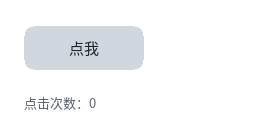

交互

完整程序：example/04_interaction.c
这一章做三件事：鼠标移上去变样、按下去下沉、点击改文本。
状态样式：:hover / :active / :focus
.btn { background-color: #22415F; color: #C8D2DE;
transition: 160ms ease-out; }
.btn:hover { background-color: #2E6BE6; color: #FFFFFF;
transform: translate(0px, -2px); }
.btn:active { background-color: #1B4CA8; transform: translate(0px, 1px); }
就这么多。没有 C 代码。
这里有个关键设计：:hover 之类的状态样式在编译期就被算成了"状态变体样式"，
存在 nodes[i].style_hover / style_active / style_focus 这三个下标里。
所以运行期切状态的开销是：
换一个样式指针，标脏 ← 没有选择器匹配，没有重新编译
三个状态同时成立时的优先级：
:active > :focus > :hover > 基础样式
事件怎么进来
主循环里只要两行：
while (ql_gfx_gl_poll(gfx)) { /* 收窗口事件 */
ql_input_dispatch(); /* 派发：指针 → hover/active/click */
...绘制...
}
ql_ui_attach_input(ui) 把 QLUIRoot 接到输入系统上（同一时刻只有一个
QLUIRoot，与"单一窗口"一致）。
⚠️ 漏了这一句的表现非常迷惑：窗口能开、滚动条能滚（那是主循环里
ql_input_dispatch()之外的机制），但点不动、hover 不亮、也打不了字 —— 事件在派发那一步因为没有事件汇被静默丢掉。 早期版本的例程就漏过这一句，test/input/test_ui_attach.c现在专门守它。
之后 ql_input_dispatch() 就会：
- 拿到指针位置 → 做命中测试（逆变换，所以动画中的元素也点得中）；
- 改状态位 → 触发
transition； - 在
pointer_up落在同一个节点上时 → 调点击回调。
想自己处理按键（Esc 关闭窗口之类），装一个 sink：
static void sink(const QLInputEvent *ev, void *user)
{
if (ev->type == QL_INPUT_KEY_DOWN && ev->key == QL_KEY_ESCAPE) {
ql_gfx_gl_close(gfx);
return;
}
ql_ui_input_event((QLUIRoot *)user, ev); /* 其余交给界面 */
}
ql_input_set_sink(sink, ui);
点击回调
static void on_click(QLUIRoot *ui, QLUINodeRT *node, void *user)
{
if (node->src->tag != QL_UI_TAG_DIV)
return; /* 只看自己关心的节点 */
s_clicks++;
char buf[64];
snprintf(buf, sizeof(buf), "点击次数：%d", s_clicks);
ql_ui_set_text(ui, s_log, buf);
}
ql_ui_set_click_cb(ui, on_click, NULL);
一条回调管全树，靠 node 区分是哪个。为什么不给每个节点单独注册？
因为结构是编译期固定的 —— 用一个 switch (node - ui->nodes) 或者查
node->src->id 就够了，不用为每个节点分配回调槽。
节点顺序就是文档顺序（深度优先、父在前），所以 &ui->nodes[2] 就是
HTML 里第 3 个元素。也可以用 ql_ui_find_by_tag(ui, QL_UI_TAG_DIV, 1)
按标签找。
没有窗口时怎么办
交互链路可以用合成事件走一遍，写测试时非常有用：
ql_ui_pointer_move(ui, 84, 48); /* 移进去 → :hover */
ql_ui_pointer_down(ui, 84, 48); /* 按下去 → :active */
ql_ui_pointer_up(ui, 84, 48); /* 松开 → click 回调 */
这个例程在没有参数的运行时会自己合成一次点击，输出：
合成一次点击（窗口模式请用鼠标点按钮）
点击次数：1
transition 是"状态变了就渐变过去"
注意上面 CSS 里的 transition: 160ms ease-out。它的作用是：状态变化时，
颜色/位移在 160ms 内插值过去，而不是瞬间跳。
三条行为：
- 不进布局 —— 过渡只改绘制期属性（颜色、alpha、位移、缩放、圆角、遮罩）， 所以过渡期间零重排；
- 打断从当前值重基 —— 快速移入移出不会跳变；
- 只重绘脏区 —— 每帧只重画受影响的那几块。
下一章专讲动画。
焦点与键盘
ql_ui_set_focus_node(ui, node); /* 驱动 :focus 样式 */
ql_ui_focus_node(ui); /* 查当前焦点 */
Tab 键的焦点链没有内建 —— 键盘导航是产品的决定，不是库的决定。
需要时在 sink 里自己管（换焦点就是一次 ql_ui_set_focus_node）。